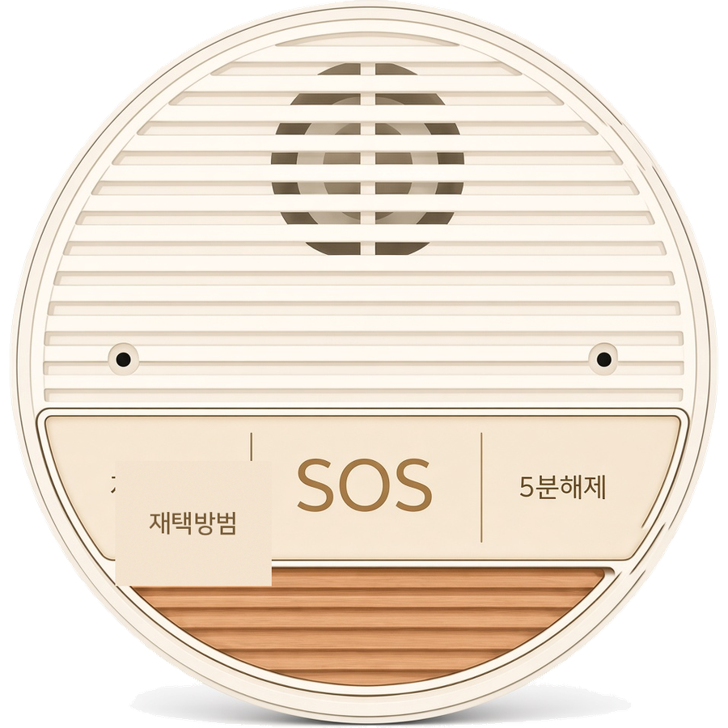
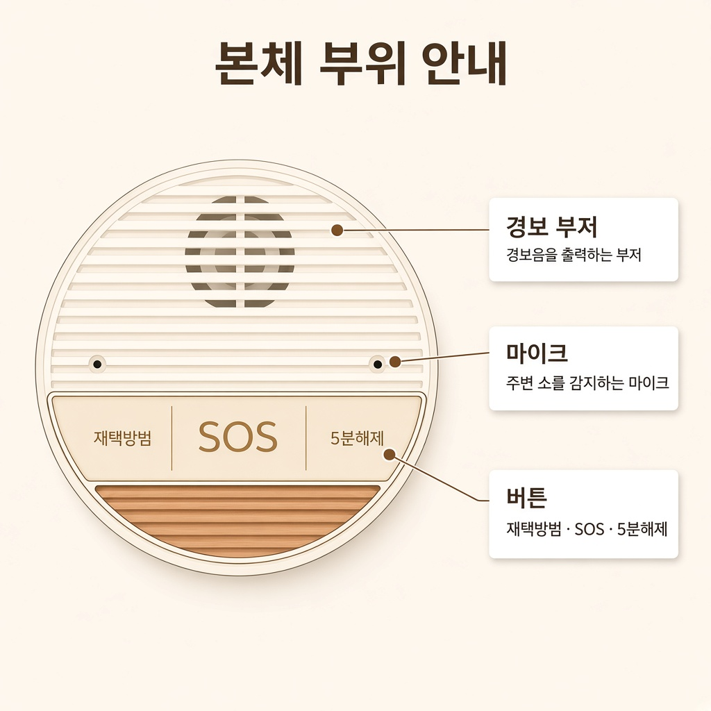
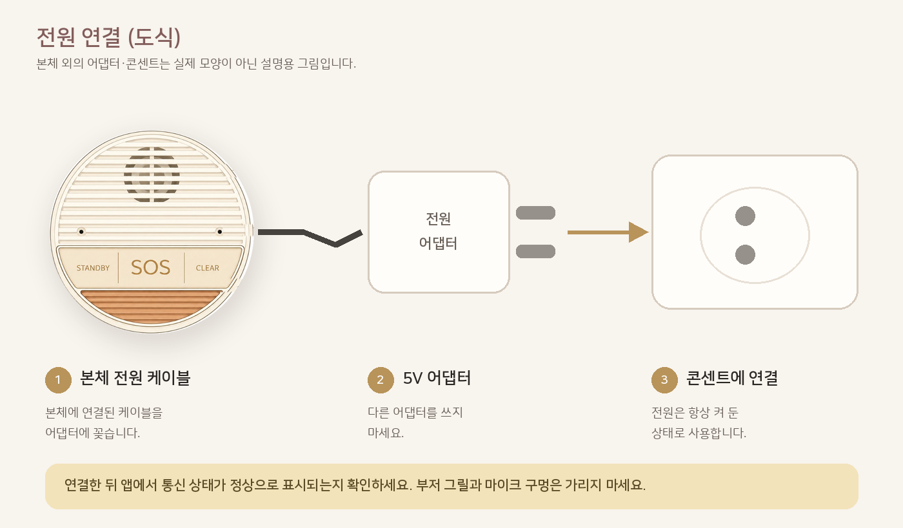
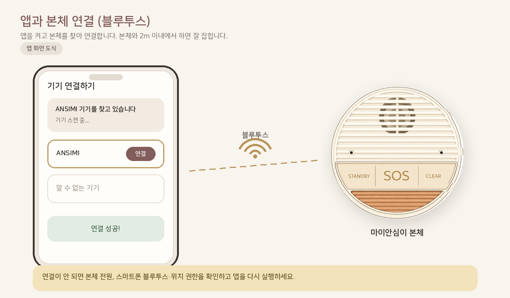
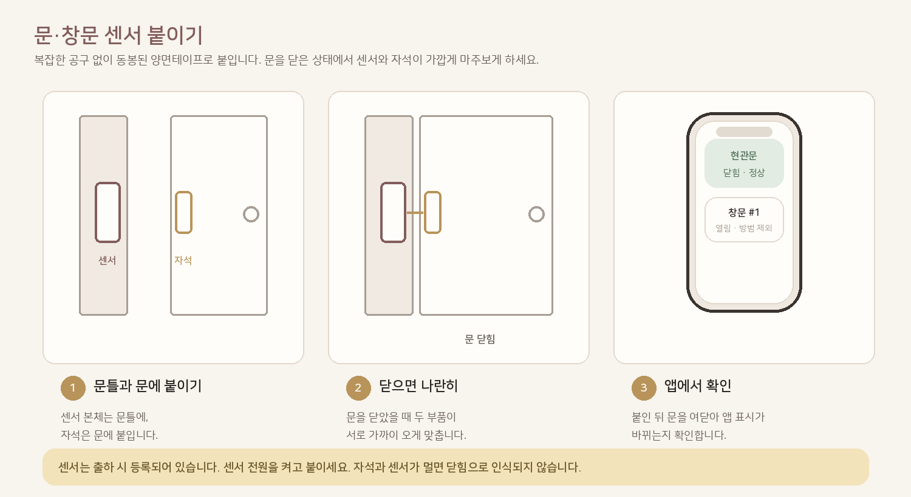
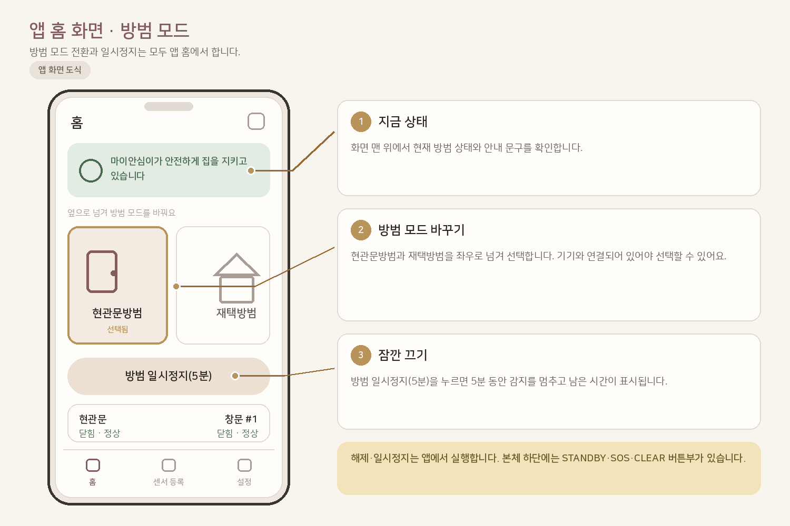
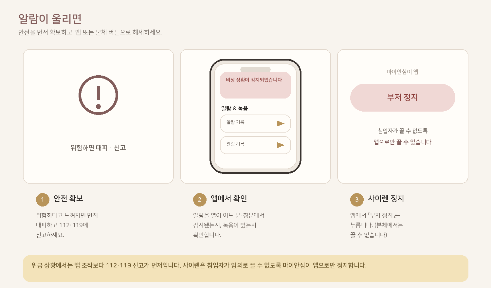

둥근 본체, USB-C 케이블, 현관용 문열림 센서가 들어 있습니다. 전원만 연결하면 바로 쓸 수 있는 상태로 출하됩니다.

부저와 좌우 마이크는 비명·경보의 핵심입니다. 천·스티커·테이프로 막으면 감지와 경보가 약해집니다.

현관이 잘 보이는 선반·콘솔에 올려 둡니다. 5V 어댑터로 연결하면 부팅이 끝나고 앱 연결을 기다립니다.

마이안심이 앱을 켠 뒤 근처 기기를 찾아 연결합니다. 연결되면 홈 화면에서 방범 모드를 고를 수 있습니다.

문짝·문틀에 센서와 자석을 가까이 붙입니다. 문을 여닫을 때 앱의 문 상태가 바뀌면 정상입니다.

현관문방범은 기본. 집에 있을 땐 재택방범, 집을 비울 땐 외출방범을 고르세요. 본체 재택방범 버튼으로도 전환할 수 있습니다.

먼저 안전을 확인한 뒤 앱에서 알림을 보고 부저 정지를 누릅니다. 침입자가 본체에서 끌 수 없도록 설계되어 있습니다.